pacman::p_load(ggrepel, patchwork, ggthemes,
hrbrthemes, tidyverse)Hands-on Exercise 2 - Beyond ggplot2 Fundamentals
Getting started
Installing and loading required libraries
For this exercise, besides tidyverse, four R packages will be used. They are:
- ggrepel: provides geoms for ggplot2 to repel overlapping text labels
- ggthemes: provides some extra themes, geoms, and scales for ggplot2
- hrbrthemes: provides typography-centric thems and theme components for ggplot2
- patchwork: for preparing composite figure created using ggplot2
The code chunk below will check if the packages needed are installed and load them into R environment.
Importing data
The data file used is called Exam_data which consists of year end examination grades of a cohort of primary 3 students from a local school. It is in csv file format.
exam_data <- read_csv("Exam_data.csv")
summary(exam_data) ID CLASS GENDER RACE
Length:322 Length:322 Length:322 Length:322
Class :character Class :character Class :character Class :character
Mode :character Mode :character Mode :character Mode :character
ENGLISH MATHS SCIENCE
Min. :21.00 Min. : 9.00 Min. :15.00
1st Qu.:59.00 1st Qu.:58.00 1st Qu.:49.25
Median :70.00 Median :74.00 Median :65.00
Mean :67.18 Mean :69.33 Mean :61.16
3rd Qu.:78.00 3rd Qu.:85.00 3rd Qu.:74.75
Max. :96.00 Max. :99.00 Max. :96.00 From the summary, there area total of seven attributes in the exam_data data frame. Four of them are categorical data type and the other three are continuous data type.
- Categorical attributes are: ID, CLASS, GENDER and RACE
- Continuous attributes are: MATHS, ENGLISH and SCIENCE
Beyond ggplot2 Annotation: ggrepel
One of the challenge in plotting statistical graph is annotation, especially with large number of data points. See the graph below for reference.
ggplot(data=exam_data,
aes(x = MATHS, y = ENGLISH)) +
geom_point() +
geom_smooth(method = lm,
size = 0.5) +
geom_label(aes(label = ID),
hjust = .5,
vjust = -.5) +
coord_cartesian(xlim = c(0,100),
ylim = c(0,100)) +
ggtitle("English scores verses Maths scores for Primary 3")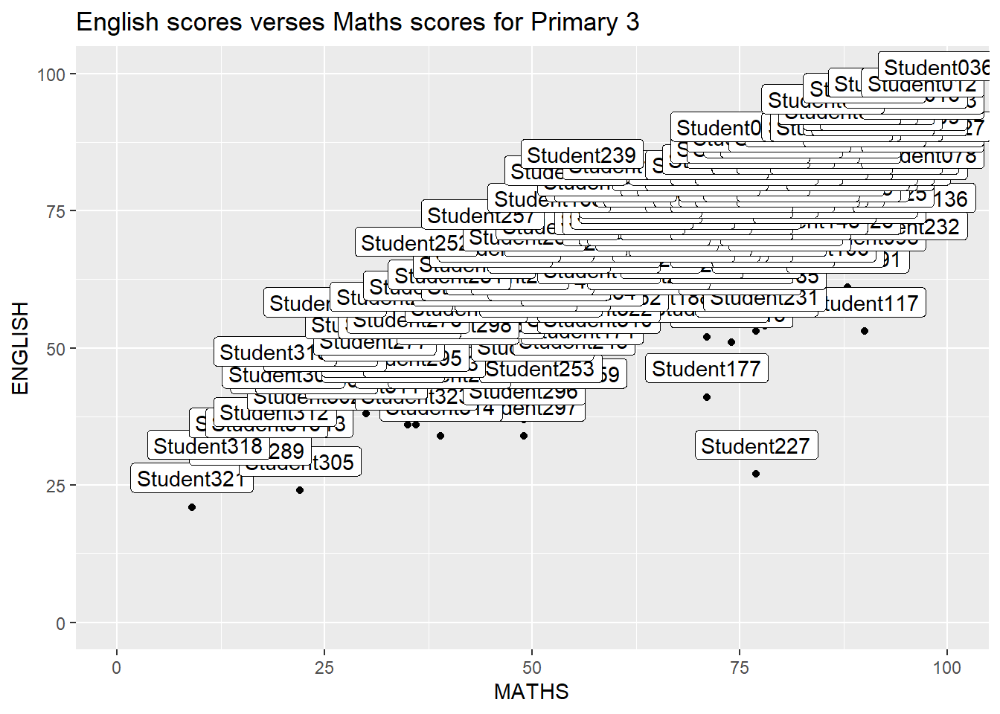
ggrepel is an extension of ggplot2 package which provides geoms for ggplot2 to repel overlapping text. We simply replace geom_text() by geom_text_repel() and geom_label() by geom_label_repel().
ggplot(data=exam_data,
aes(x = MATHS, y = ENGLISH)) +
geom_point() +
geom_smooth(method = lm,
size = 0.5) +
geom_label_repel(aes(label = ID),
fontface = 'bold') +
coord_cartesian(xlim = c(0,100),
ylim = c(0,100)) +
ggtitle("English scores verses Maths scores for Primary 3")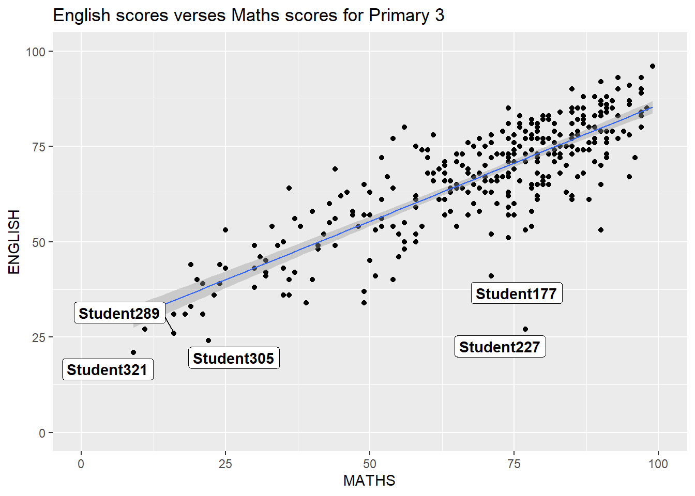
Beyond ggplot2 Themes
ggplot2 comes with eight built-in themes which are: theme_gray(), theme_bw(), theme_classic(), theme_dark(), theme_light(), theme_linedraw(), theme_minimal() and theme_void().
ggplot(data=exam_data,
aes(x = MATHS)) +
geom_histogram(bins = 20,
boundary = 100,
color = "grey25",
fill = "grey90") +
ggtitle("Distribution of Maths score")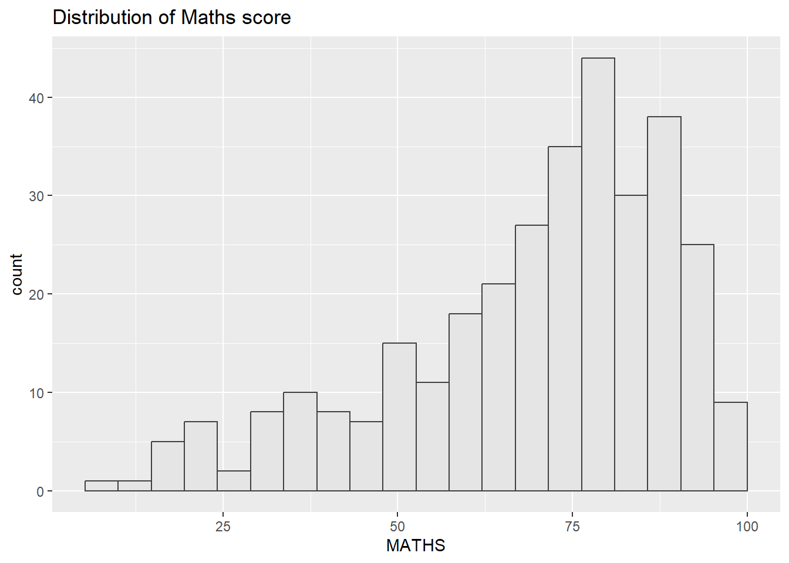
ggplot(data=exam_data,
aes(x = MATHS)) +
geom_histogram(bins = 20,
boundary = 100,
color = "grey25",
fill = "grey90") +
theme_dark() +
ggtitle("Distribution of Maths score")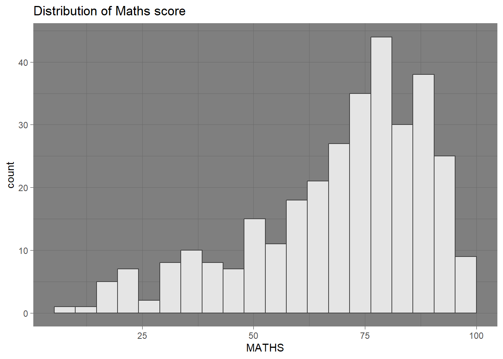
ggtheme package
ggtheme provides ggplot2 themes that replicate the look fo plots by Edward Tufte, Stephen Few, Fivethirteight, The Economist, Stata, Excel and The Wall Street Journal among others.
The code below used The Exonomist theme.
ggplot(data=exam_data,
aes(x = MATHS)) +
geom_histogram(bins = 20,
boundary = 100,
color = "grey25",
fill = "grey90") +
ggtitle("Distribution of Maths score") +
theme_economist()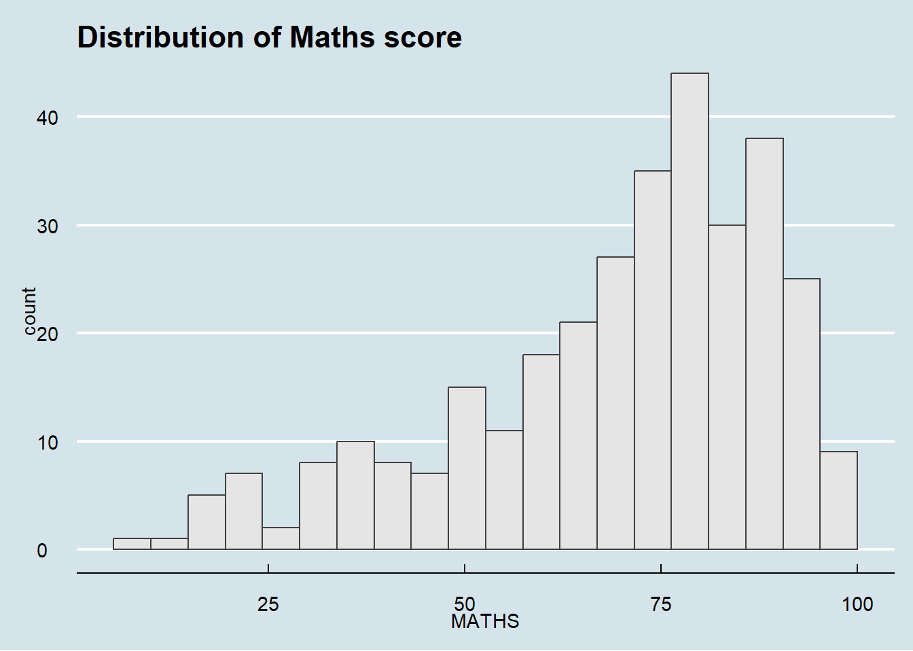
Tip
It has many themes and provides some extra geoms and scales for ggplot2. Consult this site to see the various options.
hrbrthemes packages
hrbrthemes package provides base theme that focuses on typograohic elements including where various lables are placed as well as the fonts that are used.
ggplot(data=exam_data,
aes(x = MATHS)) +
geom_histogram(bins = 20,
boundary = 100,
color = "grey25",
fill = "grey90") +
ggtitle("Distribution of Maths score") +
theme_ipsum()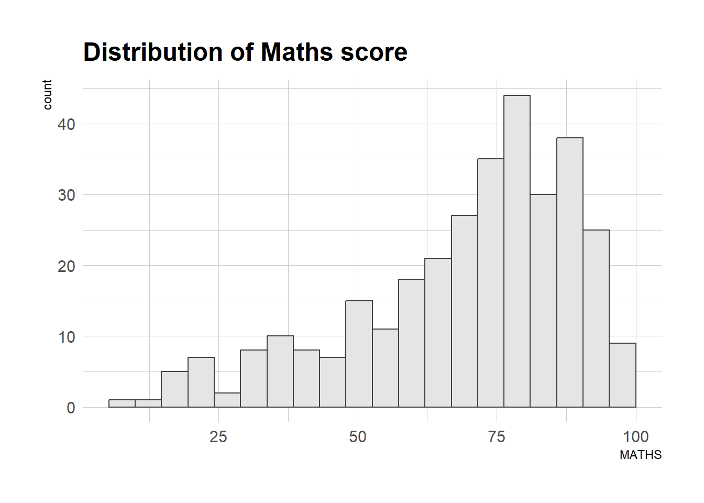
The second goal centers around productivity for a production workflow where presenting something needs to be visually clean and readable to increase reader’s engagement. Consult this site to learn more.
ggplot(data=exam_data,
aes(x = MATHS)) +
geom_histogram(bins = 20,
boundary = 100,
color = "grey25",
fill = "grey90") +
ggtitle("Distribution of Maths score") +
theme_ipsum(axis_title_size = 18,
base_size = 15,
grid = 'Y')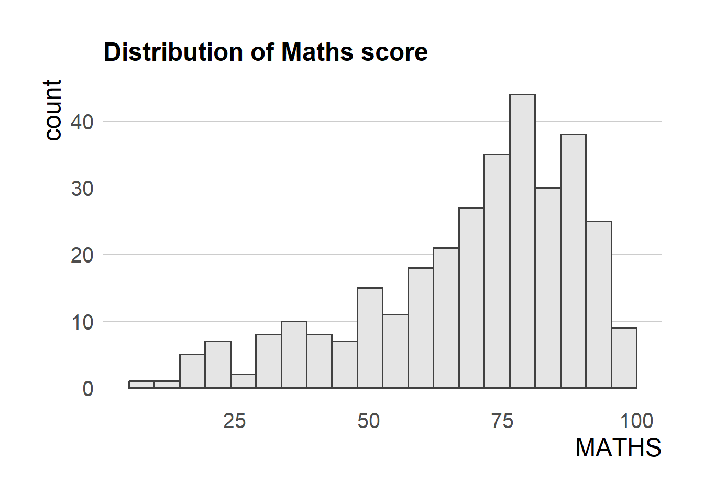
TipWhat can be learnt from the code chunk above?
axis_title_size: controls font size of the axis titlebase_size: controls the size of axis labelgrid: controls the lines in the graph, in this case remove the x-axis grid lines
Beyond single graph
It is possible to create composite plot by combining multiple graphs. First, lets create three statistical graphics.
p1 <- ggplot(data=exam_data,
aes(x = MATHS)) +
geom_histogram(bins = 20,
boundary = 100,
color = "grey25",
fill = "grey90") +
coord_cartesian(xlim = c(0,100)) +
ggtitle("Distributions of Maths scores")
p1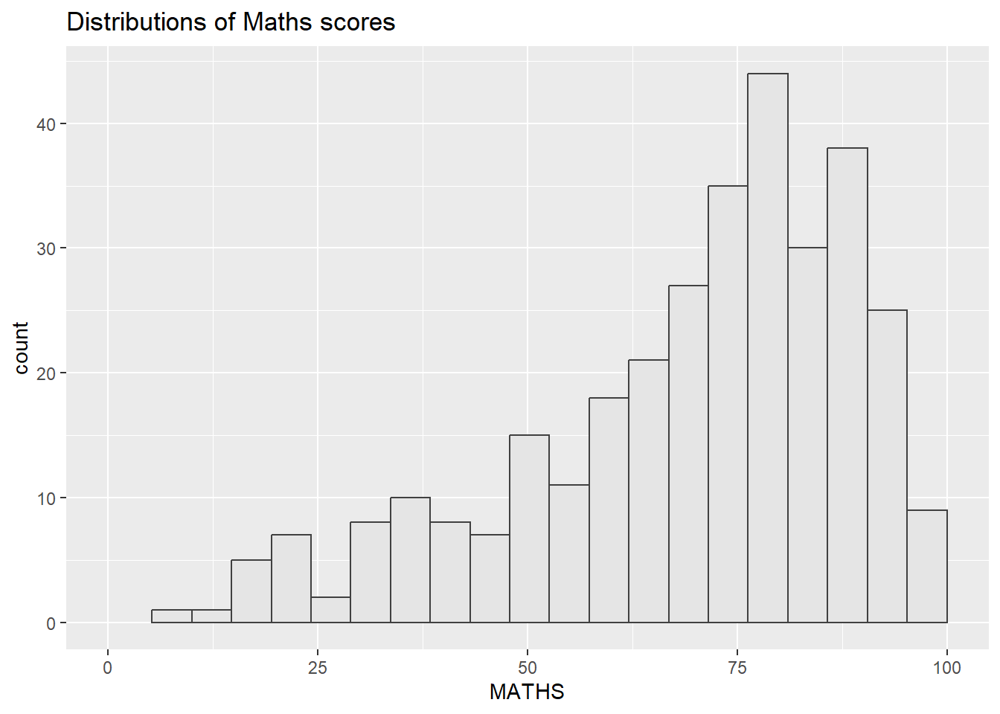
p2 <- ggplot(data=exam_data,
aes(x = ENGLISH)) +
geom_histogram(bins = 20,
boundary = 100,
color = "grey25",
fill = "grey90") +
coord_cartesian(xlim = c(0,100)) +
ggtitle("Distributions of English scores")
p2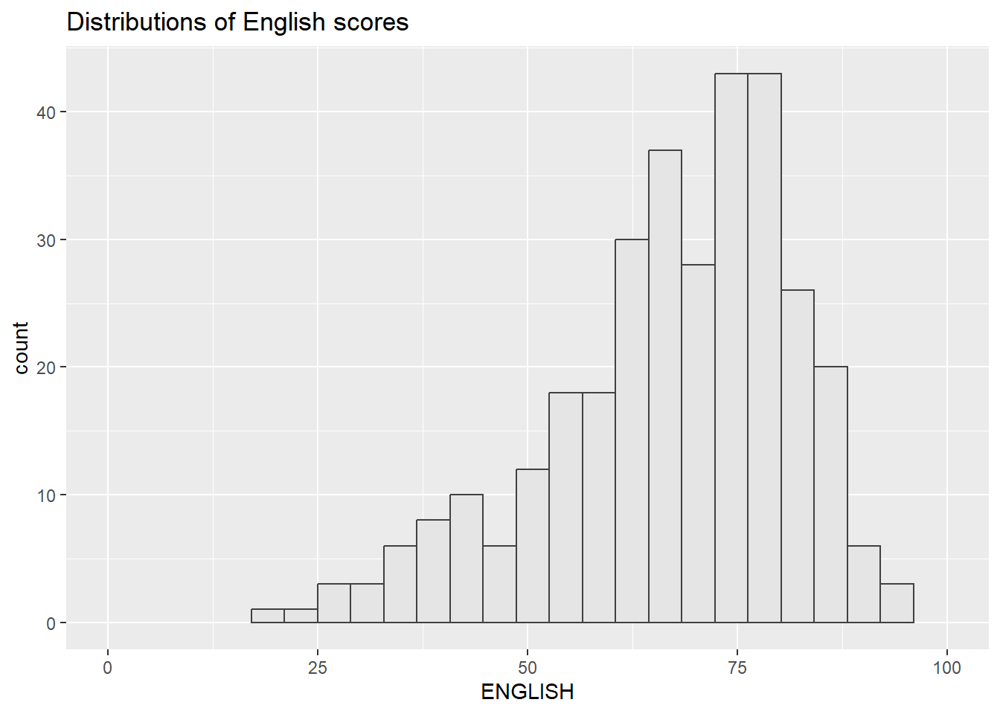
p3 <- ggplot(data=exam_data,
aes(x= MATHS,
y=ENGLISH)) +
geom_point() +
geom_smooth(method=lm,
size=0.5) +
coord_cartesian(xlim=c(0,100),
ylim=c(0,100)) +
ggtitle("English scores versus Maths scores for Primary 3")
p3
patchwork methods
There are several extension function that support composite figure by combining several graphs such as grid.arrange() of gridExtra package and plot_grid() of cowplot package. This section will focus on an extension called patchwork which is specially designed for combining ggplot2 graphs into a single figure.
Patchwok package has a very simple syntax wherewe can create layouts super easily. Here’s the general syntax:
- Two-column layout using the plus sign +
- Subplot group ysing paranthesis ()
- Two-row layout using division sign /
- Plot beside each other using |
Examples:
p1 + p2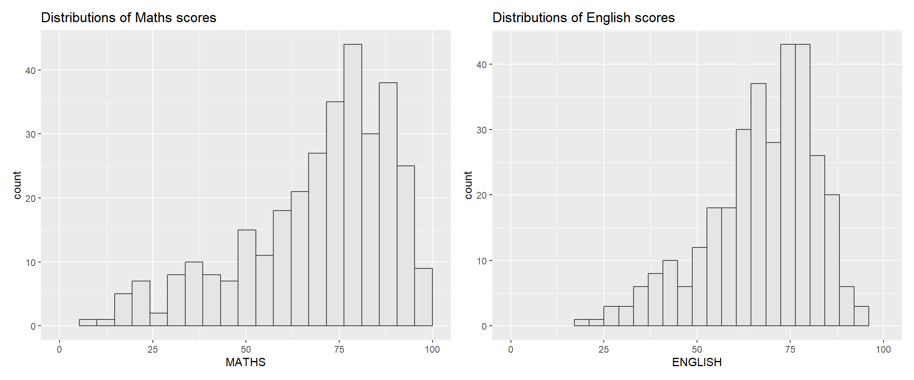
(p1 / p2) | p3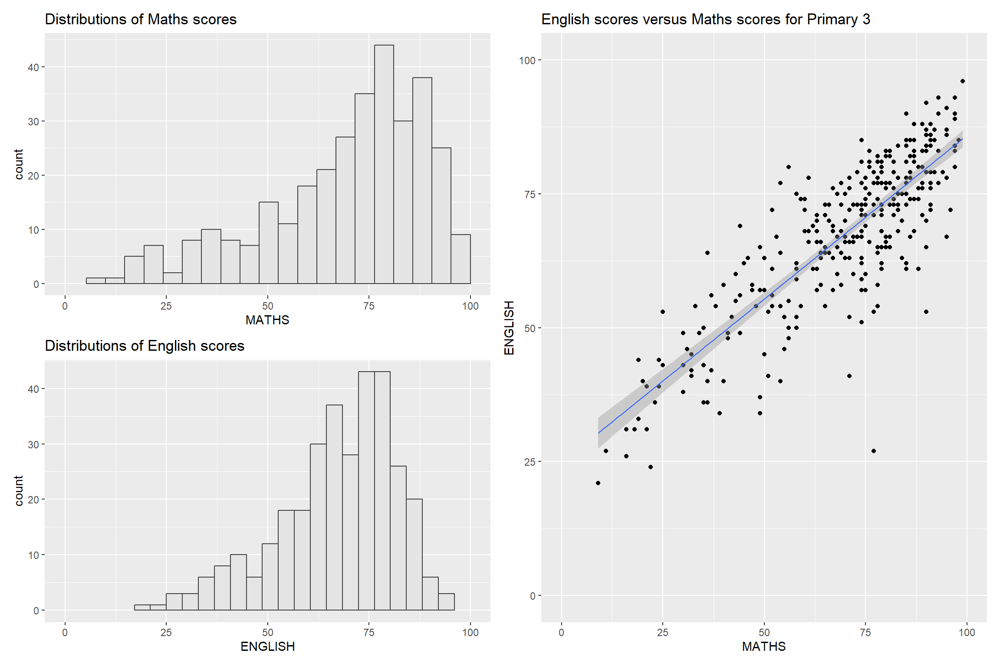
Tip
Another way is to use wrap_plots() to directly plot all the graphs into one section. Use #| fig-width and #| fig-height to change the size or scale of the figure. This one uses 15 and 7 respectively.
wrap_plots(p1, p2, p3)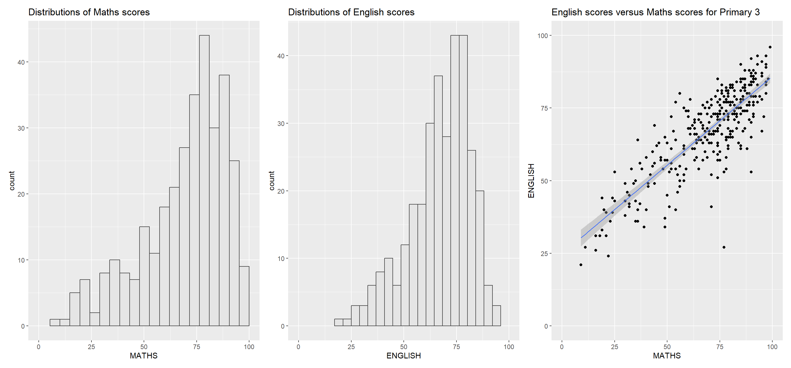
To learn more, refer to Plot Assembly. The site has information about adding a table or some text and how to place it to the left of the graph.
Creating composite figure with tag
In order to identify subplots in text, patchwork also provides auto-tagging capabilities as shown below.
((p1 / p2) | p3) +
plot_annotation(tag_levels = 'I')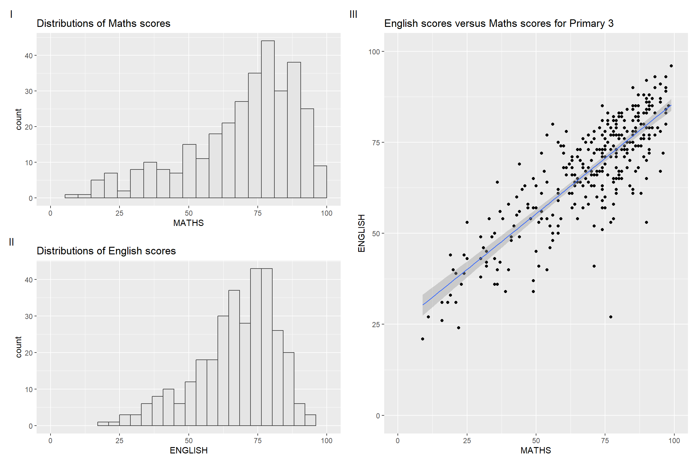
Creating figure with inser
It is also possible to insert one or more plots or graphic elements freely on top or below another plot using inset_element().
p3 + inset_element(p2,
left = 0.02,
bottom = 0.7,
right = 0.5,
top = 1,
align_to = 'full')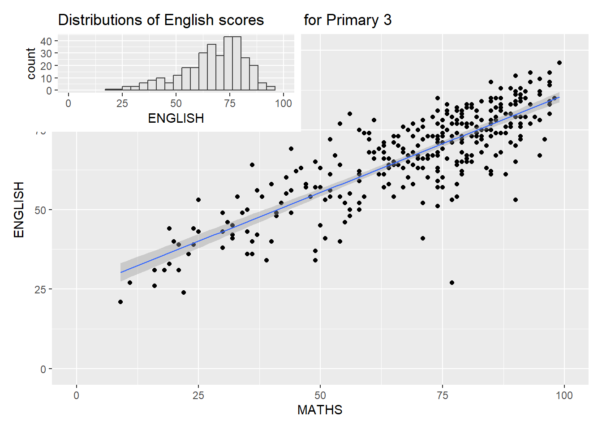
Note
align_to specifies where the element should be relative to. ‘panel’ is the default, ‘full’ is for the whole image, ‘plot’ is for the plot area of the main layer.
Creating composite figure using patchwork and ggtheme
patchwork <- ((p1 / p2) | p3) +
plot_annotation(tag_levels = "1")
patchwork & theme_economist(dkpanel=TRUE) 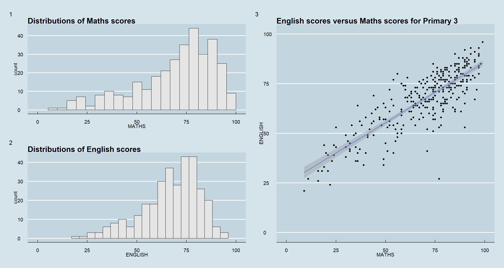
Tip
It is not possible to add both ggtheme and hrbrtheme as both as solid themes so adding both would result on the last theme added. For example if the code was pathwork & theme_economist() & theme_ipsum() the output will have the ipsum theme and no economist theme.